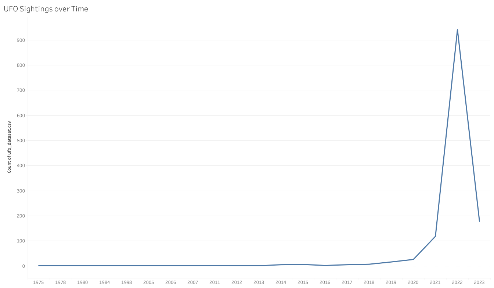
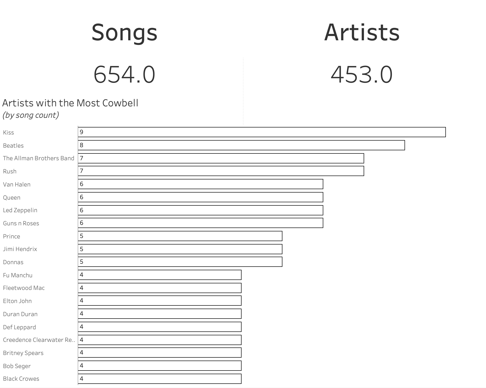
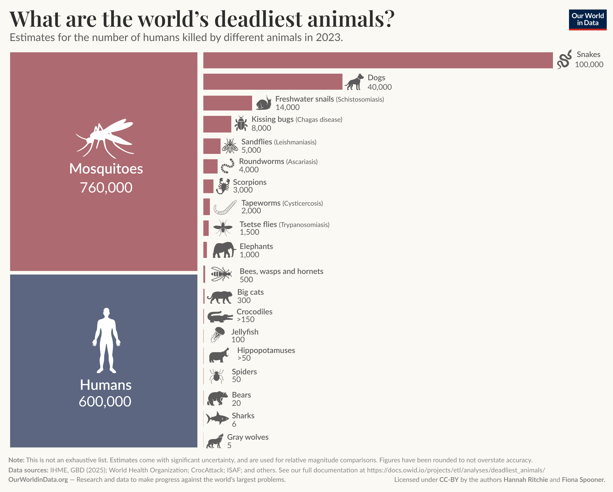

Trabalho de Visualização de Dados. Três gráficos do Makeover Monday refeitos com D3.js e DuckDB.
Caso 1: UFO Sightings over Time
Fonte: Makeover Monday 2026 W25,
dados do NUFORC no Kaggle.
Pergunta: os avistamentos de OVNI estão aumentando com o tempo?
Original

Os anos ficam com o mesmo espaço no eixo X mesmo quando tem décadas entre eles,
e a linha liga anos com 1 relato até 2022.
Redesign A: avistamentos por mês
Uma barra por mês, com o valor em cima. Usamos só jan/2022 a fev/2023, porque os relatos do dataset
foram postados entre dez/2021 e mar/2023 e os outros períodos estão incompletos.
Redesign B: avistamentos por dia da semana e hora
Heatmap com o total de relatos em cada combinação de dia da semana e hora do dia.
Mostra quando as pessoas mais relatam avistamentos, coisa que o total por ano esconde.
Caso 2: Songs with Cowbell
Fonte: Makeover Monday 2026 W40,
dados de cowbellsongs.com.
Pergunta: quais artistas mais usam cowbell nas músicas?
Original

Os totais aparecem com casa decimal, as barras não têm preenchimento e o ranking corta em 20
no meio de um empate (16 artistas têm 4 músicas e só 9 aparecem). Os totais também não batem
com o arquivo, que tem 661 linhas, músicas repetidas e artistas escritos de formas diferentes.
Redesign A: cada música é um quadrado
Todos os 27 artistas com 4 ou mais músicas, sem cortar empates. Cada quadrado é uma música,
passando o mouse aparece o nome dela. Os nomes repetidos foram corrigidos no DuckDB.
Redesign B: quantas músicas cada artista tem
Histograma do número de músicas por artista. Em laranja está a parte que o original mostra,
a maioria dos artistas tem só uma música.
Caso 3: What are the world’s deadliest animals?
Fonte: Makeover Monday 2026 W37,
gráfico do Our World in Data.
Pergunta: quais animais mais matam pessoas por ano?
Original

Mosquitos e humanos são mostrados como área de um quadrado e os outros animais como comprimento
de barra, então não dá para comparar os dois grupos. Na escala linear, quase metade das barras fica
invisível, e os valores marcados com ">" (mínimo) aparecem igual aos outros.
Redesign A: todos os animais na mesma escala
Barras com escala logarítmica, então todos os 21 animais aparecem e podem ser comparados.
Humanos em cinza e as estimativas mínimas (">") com a cor mais apagada.
Redesign B: de onde vêm as mortes
Waffle com 100 quadrados, cada um é 1% das mortes, colorido pelo tipo de animal. Mostra que
os insetos (quase todos mosquitos) são metade das mortes e os humanos quase 40%.